Outro testemunho relativo ao martírio de Pedro
e Paulo, é fornecido por Clemente de Roma em sua Epístola aos Coríntios (escrita
cerca de 95-97 AD), em que ele diz: "Por
zelo e astúcia o maior e a maioria dos Discípulos íntegros (da Igreja)
sofreram perseguição e foram levados à morte.
Coloquemos diante de nossos olhos o bom Apóstolo São Pedro, o qual foi submetido
a um tratamento injusto e cruel, sofrendo numerosas misérias, e assim, tendo dado
testemunho do SENHOR, foi martirizado, e entrou no lugar merecido da glória".
A seguir, ele menciona Paulo e vários outros eleitos que juntos
ou isoladamente, sofreram o martírio “entre nósâ€
(hemin de en, i.e., entre os romanos, IV). Clemente de Roma está
se referindo a perseguição que Nero covardemente fez aos cristãos, e aqui, ele coloca em
realce o martírio que Pedro e Paulo sofreram naquela época.
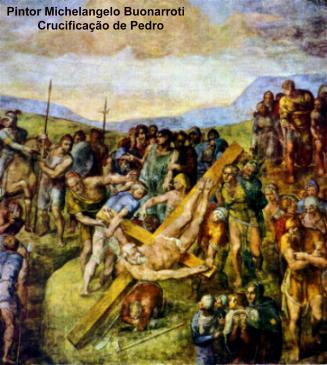
Nero foi Imperador Romano entre 54 e 68. Em
Julho de 64 começou a terrível perseguição que empreendeu contra os cristãos, e no começo
de 68 fugiu de Roma e se suicidou. Assim sendo, a morte de Pedro aconteceu no mencionado
período, de Julho/64 a princípio/68. O ano 67 é aquele de maior preferência entre os biógrafos
e da Tradição Cristã. Contudo, o dia do martírio também é desconhecido; 29 de junho, foi o
dia escolhido para a sua Festa desde o quarto século, todavia, não existe uma
prova concreta de que foi exatamente no dia 29 que ele morreu.
Ainda relativo à maneira da morte de
Pedro, possuímos uma tradição, atestada por Tertuliano ao término do segundo
século e por Orígenes (conforme História Eclesiástica, II, Eusebius Pamphilus,
Bispo de Caesarea – 265/339) afirmando que ele foi crucificado. Orígenes
disse: "Pedro foi crucificado em
Roma com a cabeça para baixo, como ele tinha desejado morrer".
TÚMULO DE PEDRO
Ao pé da Colina do Vaticano,
nas proximidades da Via Cornélia, o Príncipe dos Apóstolos encontrou o seu
lugar de sepultamento. Deste sepulcro, Caius já falava no terceiro século.
Durante um tempo os restos de Pedro e Paulo foram postos em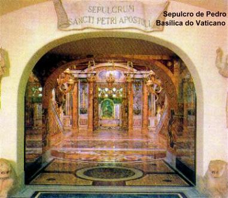
uma abóbada na Via Ápia no lugar “ad
Catacumbas†onde a Igreja de São Sebastião está localizada.
(A sua ereção no século IV foi dedicada aos dois Apóstolos). Os restos
provavelmente tinham sido levados para lá no começo da perseguição de
Valeriano em 258, para protegê-los contra a ameaça de dessacralização
empreendida pelo Imperador Romano, quando o Cemitério dos Cristãos foi
confiscado. Depois os restos mortais retornaram ao local anterior, e o Imperador
Constantino, o Grande, fez uma Basílica magnífica erguida em cima do
sepulcro de Pedro ao pé da Colina do Vaticano. Esta Basílica foi substituída
no décimo sexto século pela atual Basílica de São Pedro. Abaixo da estrutura
do altar, em cima da abóbada que abriga o sarcófago com os restos do Apóstolo,
foi feita uma cavidade. Ela estava fechada na frente por uma pequena porta ao
lado do altar. Abrindo a porta o peregrino poderia desfrutar do grande privilégio
de se ajoelhar diretamente em cima do sarcófago de Simão Pedro. A Chave desta
porta só era concedida com especial autorização. (cf. Excursões de Gregory,
"De gloria martyrum", I, 28).
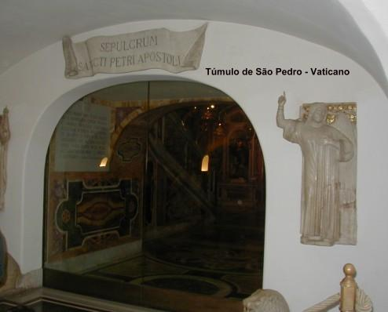
A memória de São Pedro também está
associada a Catacumba de Santa Priscilla na Via Salaria. De acordo com a Tradição
Cristã, São Pedro ali instruiu os cristãos e administrou o batismo a muitas
pessoas. Esta tradição parece estar baseada em testemunhos mais antigos. A
catacumba está situada debaixo do jardim de uma vila da família de um antigo
Senador Cristão, a mansão era denominada de Acilii Glabriones, e a sua construção
foi antes do fim do primeiro século. Acilius Glabrio, foi cônsul romano em 91.
Quando descobriram que ele era cristão, foi condenado a morte pelo Imperador
Domiciano. É bem possível que a fé da família tenha se originado no tempo
Apostólico, e que segundo a Tradição, o Príncipe dos Apóstolos recebeu uma
hospitaleira recepção na casa do cônsul, durante a sua estada em Roma.
Em recentes escavações iniciadas em 1940,
realizadas embaixo da Basílica de São Pedro, no Vaticano, os arqueólogos
observaram que todos os túmulos convergiam para um túmulo especial. Ao redor
dele tinha sido construído um muro de terracota, pintado em vermelho e que pelas
inscrições, era particularmente venerado. No muro continha desenhos de grafitos,
que peritos leram as letras: “PE – TRâ€,
iniciais do nome grego Petros (Pedro), e “EN†que queria dizer
“ENIâ€, ou seja
“está aquiâ€. Então significa:
“Pedro jaz aquiâ€.
Assim, as escavações arqueológicas permitiram identificar o lugar exato da sepultura
de Pedro, situada sob o atual altar da Confissão. Os restos mortais foram transladados
para a Basílica de São Pedro, onde se encontram num túmulo especial.
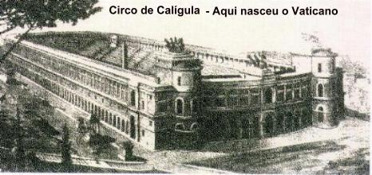
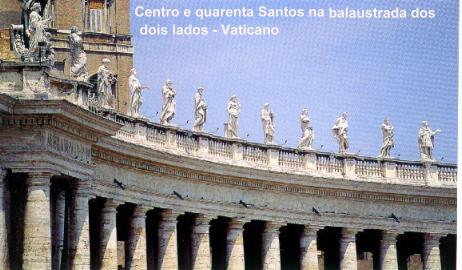
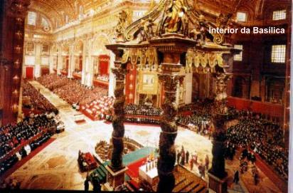
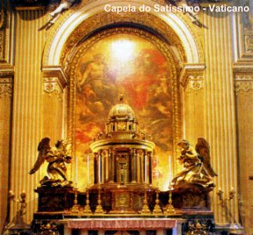
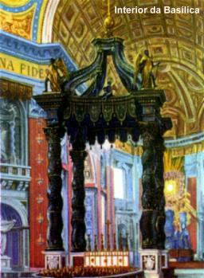
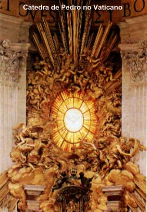

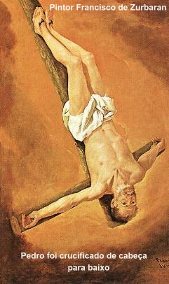
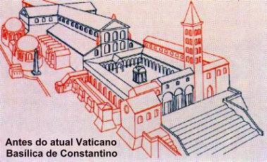

 Próxima Página
Próxima Página
Página Anterior
Retorna ao Índice